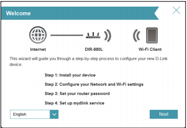
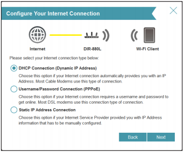
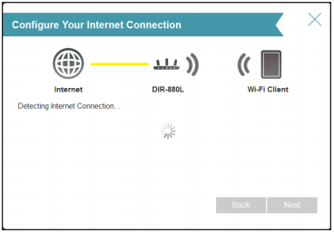
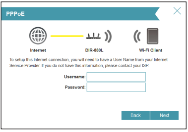
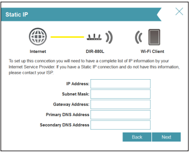
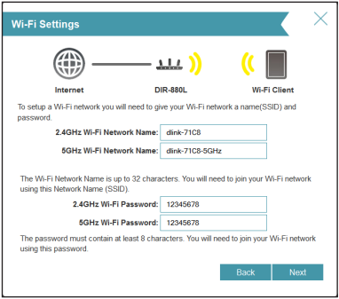
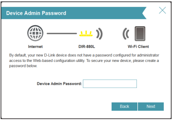
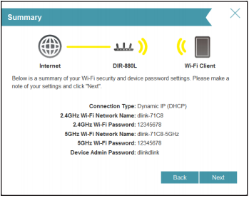
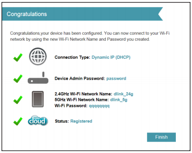

How To Set Up Your Router Using D-Link’s New Management GUI
When setting up your router, stress is the last thing you want to deal with. Sometimes instructions aren’t clear or what actually happens doesn’t match what is supposed to be happening. With D-Link’s new User Interface we’ve worked on fixing that, our new interface makes setting up your new router easy, fool proof, and fast.
Setup – Three Steps till Launch
Once you have connected your router to your modem or gateway, found in the setup instructions, you will be prompted to go to http://dlinkrouter.local./ or IP address (http://192.168.0.1) in your preferred web browser. From there our new setup wizard pops up to give you step-by-step instructions, that are as easy as they come.
Here you will see four steps. Yes, I lied. It’s not three, but the fourth step is completely optional. Here’s what you can expect.
Router Login Wizard
‘Log in you fools!’, Just kidding, it’s not that kind of wizard guys and gals. This is what you will see the moment you get to the router login page via IP address or URL forwarding. Just a click on “next” then you get to the good stuff.
Step 1 (Part A): DHCP, PPPoE, and Static IP Address Connection 
Give your router a few moments to detect your internet connection type. After the router detects your internet connection, you may need to enter your Internet Service Provider (ISP) information such as username and password. If your internet connection type is DHCP, you can now select DHCP Connection (Dynamic IP Address).That usually works; if not, no worries we have a backup plan.
Step 1 (Part B): Internet Connection Type (Did Not Auto-Detect IP Address) 
(Skip this if your internet connection type was detected successfully) Sometimes the router cannot detect your internet connection type. In this case, a list of internet connection types will be listed for you If you don’t know your internet connection type off the top of your head and you don’t have it written somewhere, contact your Internet Service Provider.
If your router detected PPPoE or you selected “Username/Password Connection (PPPoE), enter your PPPoE username and password in the respective boxes.
If your router detected or selected Static IP Address Connection, enter the IP information and DNS settings supplied by your ISP.
Step 2: Wi-Fi (SSID) Setup
The AC1900 Wi-Fi Router is dual band so we have two Wi-Fi bands to set up here. One is the common 2.4Ghz band while the other is the more powerful 5GHz segment. Create a Wi-Fi network name (SSID) using up to 32 characters. When creating your password, for security reasons, don’t use “password” or anything too easy to guess, try and make it something easy for you to remember but hard for others to guess. For more tips on password creation, check out our blog on tips to password protecting your network.
Pro-Tip: Don’t name the 2.4 and 5.0 segments the same name. It may seem obvious but you will be surprised at how many networks have this issue. It makes it very difficult to know which band you should connect to, especially if you have a device capable of connecting to the more superior 5GHz band. What’s better and easier to remember? Use a common name – e.g. “dlink” then add the band number right after “dlink2.4” for the 2.4GHz segment and “dlink5.0” for the 5GHz segment. I personally use my last name backwards, but it’s up to you!
Step 3: Device Admin Password
The Device Admin Password is a different level of security. Anyone who is connected to your network can easily type in the IP address to get to the router login page. For additional security, create a password for your D-Link router. You will have to enter this password every time you decide to log in to your router. After that you will hit the summary window shown below.
Viola! – Congratulations
You’re done with the setup part. If you would like a tour of the new user interface once you’re logged in, click here.